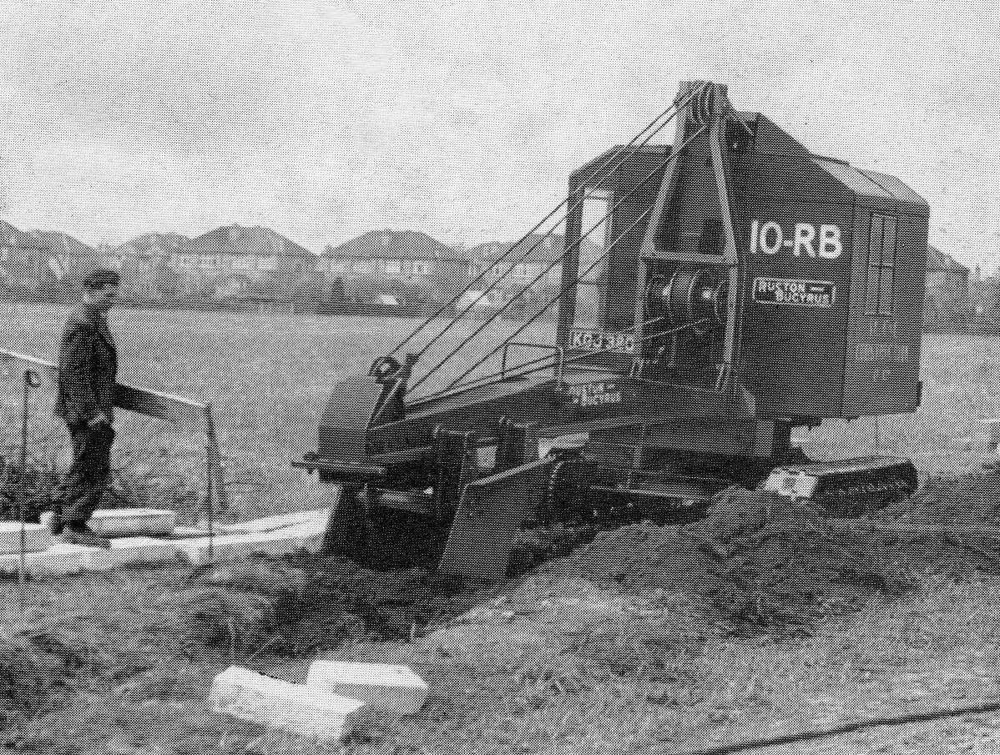

The Story
From bomb-ravaged Swansea to the factory floor.

Born in Swansea in 1943, Geoffrey grew up as the city came to grips with the damage of the Luftwaffe raids — and became fascinated by the heavy equipment carrying out the reconstruction all around him.
At sixteen, that fascination took him to Lincoln, where he served a five-year apprenticeship with Ruston Bucyrus Excavators, learning every stage of the equipment manufacturing process.
The 190-page book follows his early life in Swansea and his years in Lincoln — the machines, the characters he met, and a Britain dominated by heavy industry.
A fascinating read— Tractor & Machinery magazine, November 2025